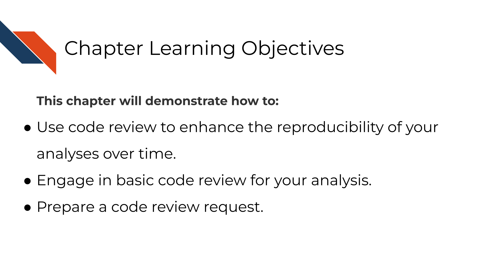
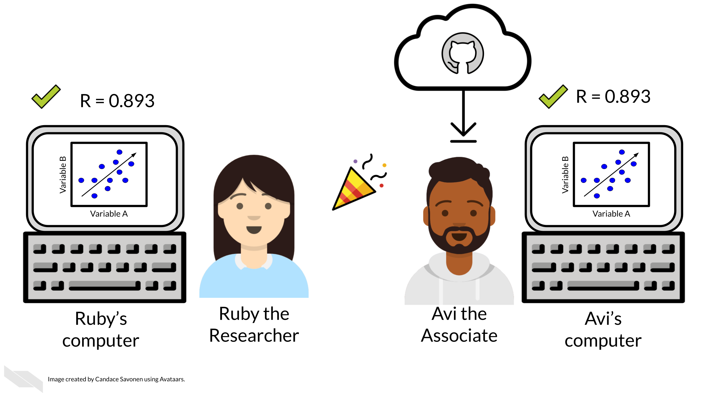
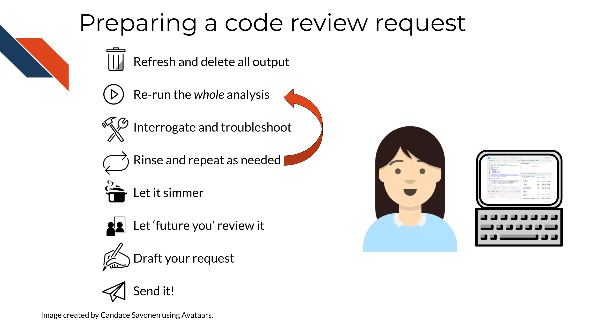

Chapter 9 Code review
9.1 Learning Objectives

We’ve previously discussed that the only way to know if your analysis is truly reproducible is to send it to someone else to reproduce! That sentiment is at the heart of code review. Although most wouldn’t dare send out a manuscript for publishing without having our collaborators giving it a line-by-line review, people don’t always feel the same way about code.
Parker (2017) describes code review:
Code review will not guarantee an accurate analysis, but it’s one of the most reliable ways of establishing one that is more accurate than before.
Not only does code review help boost the accuracy and reproducibility of the analysis, it also helps everyone involved in the process learn something new!
9.1.0.1 Recommended reading about code review
- Code Review Guidelines for Humans by Hauer (2018).
- Your Code Sucks! – Code Review Best Practices by Hildebr (2020).
- Best practices for Code Review by S. Team (2021).
- Why code reviews matter (and actually save time!) by Radigan (2021).
9.2 Exercise: Set up your code review request!
Since reproducibility is all about someone else being able to run your code and obtain your results, the exercise in this course involves preparing to do just that!
The goal:

In the second part of this reproducibility course we will discuss how to conduct formal line-by-line code reviews, but for now, we will discuss how to prep your analysis for someone else look at your code and attempt to run it.
At this point, you should have a GitHub repository that contains the following:
- A
make_heatmapnotebook - A README
- A data folder containing the metadata and gene expression matrix files in a folder named
SRP070849:SRP070849/metadata_SRP070849.tsvSRP070849/SRP070849.tsv
1) Refresh and delete output
Before you send off your code to someone else, delete your output (the results and plots folders) and attempt to re-run it yourself. This also involves restarting your R session/Python kernel and running all the chunks again.
2) Re-run the whole analysis
3) Interrogate and troubleshoot If your code has any issues running, try your best to troubleshoot the problems. Read this handy guide for tips on troubleshooting R.
4) Rinse and repeat
Repeat this as many times as needed until you reliably are able to re-run this code and get the same results without any code smells popping up. Dig into bad code smells or bad results smells wherever you sense them. If you aren’t sure why you feel this way about your code or results, hold on to this and it may be something your collaborator will be able to see something you don’t.
5) Let it simmer
Leave your analysis for a bit. Do you think it’s perfect? Are you at your wits end with it? No matter how you feel about it, let it sit for a half a day or so then return to it with fresh eyes (Savonen 2021b).
5) Re-review your documentation and code with fresh eyes
Now with fresh eyes and doing your best to imagine you don’t have the knowledge you have – does your analysis and results make sense?
6) Are you sure it’s ready?
Ask yourself if you’ve polished this code and documentation as far as you can reasonably take it? Realizing that determining what qualifies as far as you can reasonably take it is also a skill you will build with time. Code review is the most efficient use of everyone’s time when your code and documentation have reached this point.
8) Draft your request Now you are ready to send this code to your collaborator, but first try to send them a specific set of instructions and questions about what you would like them to review, in your message to them include this information (You may want to draft this out in a scratch file):
Code review requests should include:
- A link to your repository that has your README to get them quickly oriented to the project.
- A request for what kind of feedback you are looking for.
- Big picture? Technical? Method selection?
- Are there specific areas of the code you are having trouble with or are unsure about? Send a link to the specific lines in GitHub you are asking about.
- Are there results that are surprising, confusing, or smell wrong?
- Be sure to detail what you have dug into and tried at this point for any problematic points.
- Explicitly ask them what commands or tests you’d like them to test run.
- Big picture? Technical? Method selection?
- Lastly, thank them for helping review your code!
9) Ready for review
Now you are ready to send your crafted message to your collaborator for review. But, for the purposes of this exercise, you may not want to ask your collaborator to spend their time carefully review this practice repository, but now that you understand and have done the steps involved you are prepared to do this for your own analyses!
TL;DR for asking for a code review:

Any feedback you have regarding this exercise is greatly appreciated; you can fill out this form!
In the second part of this course, we will discuss how to conduct code review through GitHub, further utilize version control, and more!